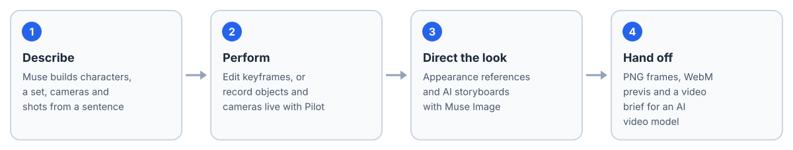

LittleTake: The Scene Is the Prompt

Overview
AI video models are powerful, but describing actions, camera movement and the relationships between objects through long prompts is hard. LittleTake lets everyday creators show those intentions instead, with an editable 3D scene and a rough performance.
A creator builds and animates a low-poly proxy scene, then uses it to direct an AI video model. LittleTake was built for the Meta Global AI Developer Hackathon by Zhening Zhu, Qingxuan Yan and Xiang Chang, powered by Meta's Muse models, and development continues after the hackathon.
What You Can Do

From a sentence to a directed shot.
- Describe a scene. Muse builds characters, a set, cameras and shots from a sentence. Every edit is a preview you can compare and apply.
- Start from a reference. Turn a clip, storyboard or sketch into an editable proxy scene.
- Perform the shot. Edit keyframes, or record objects and cameras live with Pilot. Muse can refine a take.
- Direct the look. Attach appearance references and generate storyboards with Muse Image.
- Hand it off. Export PNG frames, WebM previs and a video brief for an AI video model, then import the finished video.
- Step inside. Experimental WebXR for working in the scene in VR.
- Let your agent direct. An MCP server lets Claude Code, Claude Desktop or Codex edit a project live.
How It Uses Meta Models
| Model | Used for |
|---|---|
| Muse Spark | Scene design, the tool-calling director, the asset expert, visual review and video briefs |
| Muse Image | Scene concepts and AI storyboards |
| SAM | Segmenting objects in reference frames |